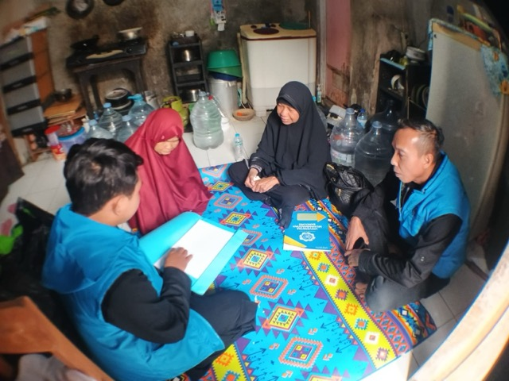
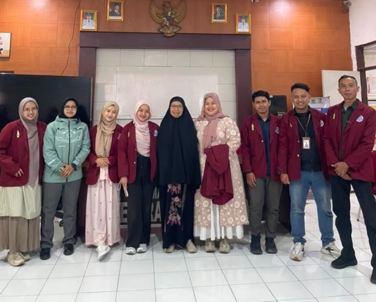
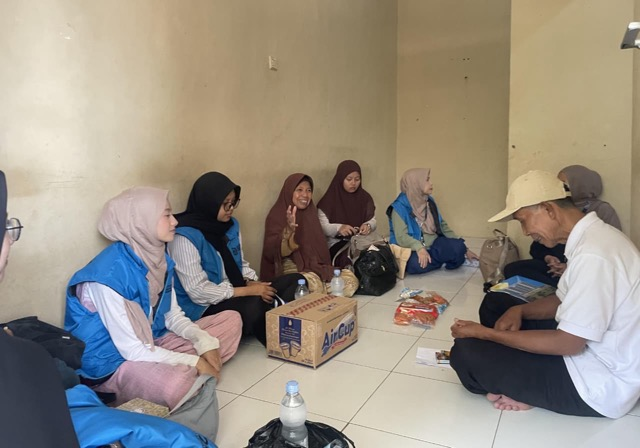
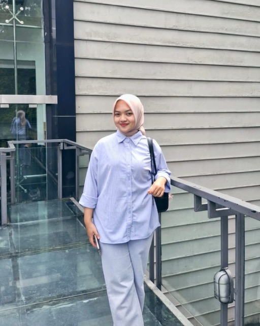
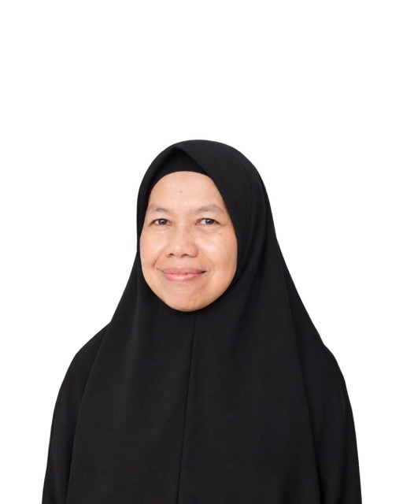
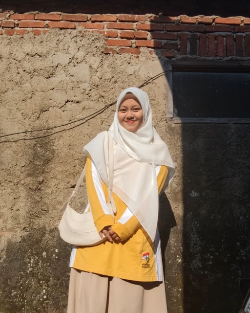
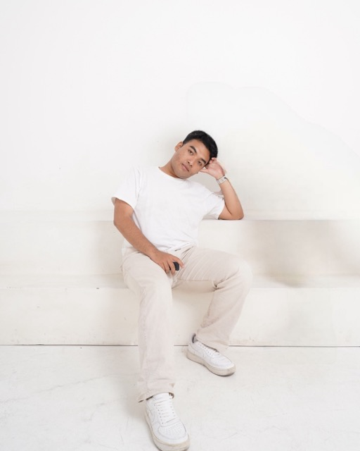

PENDIDIKAN · ATS
Pendataan & verifikasi
Kunjungan dan wawancara bersama pengurus wilayah untuk mengenali kondisi Anak Tidak Sekolah.
Lihat ringkasan ATSPendataan ATS dilakukan melalui kunjungan serta verifikasi lapangan. Rekap program mencatat 31 data awal, termasuk status validasi dan tindak lanjut kembali ke sekolah.
Angka mengikuti ringkasan ATS pada halaman Program KKN. BPB: Belum Pernah Belajar · DO: putus sekolah · LTM: lulus tidak melanjutkan.





Dua kegiatan menggunakan pendekatan aktif dan visual: anak menyusun media konstruksi flanel, sekaligus belajar mengenali perasaan dan bercerita dengan aman.
Kerja lingkungan menggabungkan pemilahan sampah, administrasi bank sampah, pencatatan tabungan, serta diskusi budidaya Maggot BSF dan pemanfaatan hasilnya.







Kegiatan dijalankan oleh Tim KKN Pasirjati II Universitas Muhammadiyah Bandung bersama perangkat kelurahan, RW/RT, Posyandu, Bank Sampah, Karang Taruna, dan masyarakat.